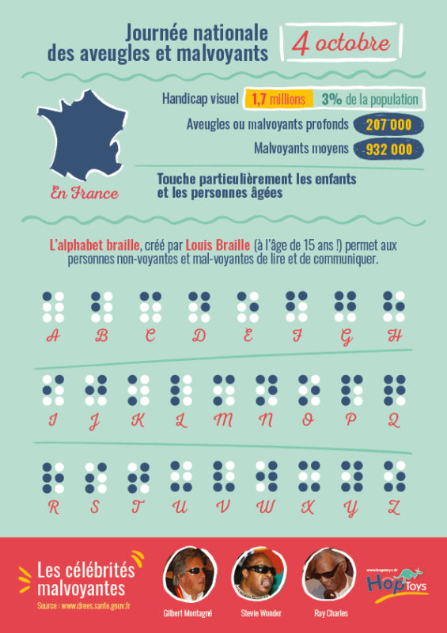

Journée National des Aveugles et Malvoyants !
En France, 12 millions de personnes sont touchées par un handicap.
Parmi elles, 1,5 million sont atteintes d’une déficience visuelle. D’après l’Insee, en 2015, plus de 560.000 aveugles et malvoyants étaient au chômage, et seulement 6% de ceux qui étaient en activité bénéficiaient d’un statut cadre. Pourtant, grâce aux nouvelles technologies, de nombreux métiers peuvent aujourd’hui être proposés aux personnes handicapées, quel que soit le degré de leur handicap. Les associations spécialisées exercent toute l’année un rôle de soutien et d’accompagnement des personnes aveugles ou malvoyantes et de leurs familles. Ces Journées Nationales sont pour elles l’occasion d’informer et de sensibiliser l’opinion.